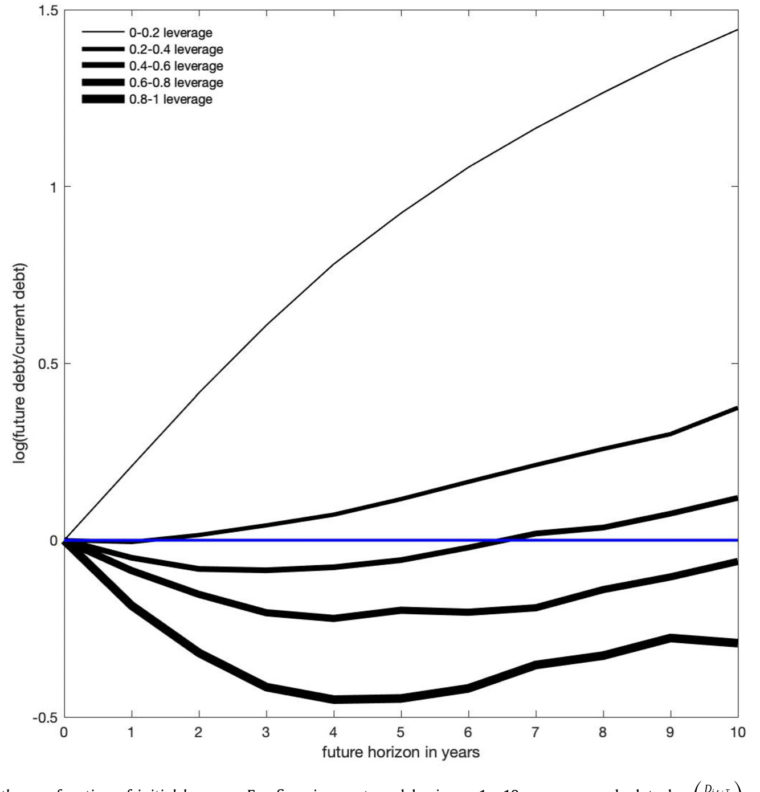
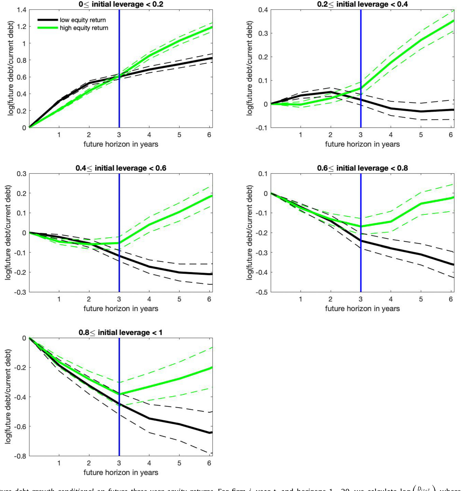
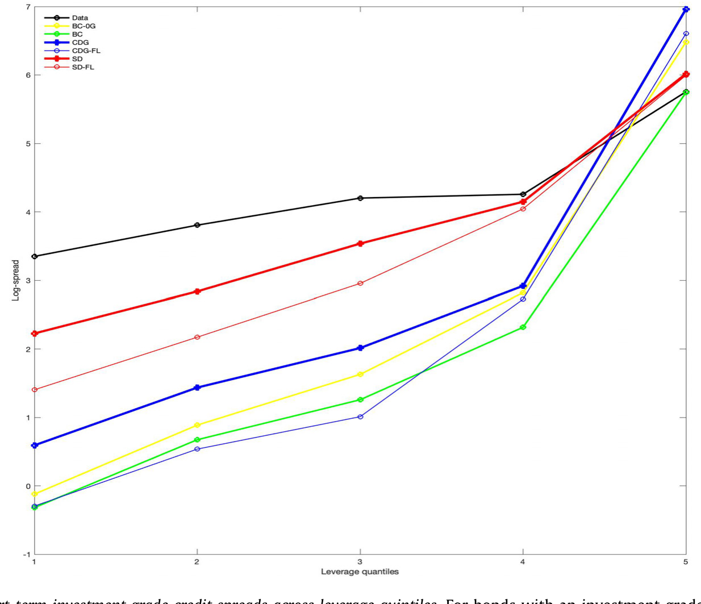
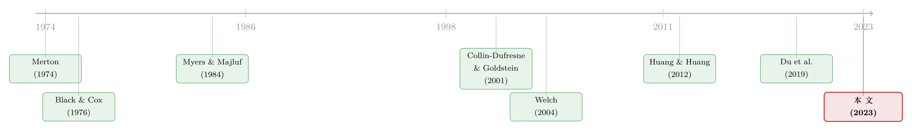

债，其实一直在动：当「随机发债」补全了信用风险的另一半
本文读的是 Feldhütter & Schaefer (2023, Journal of Financial Economics)：几乎所有结构化信用风险模型都默认「公司的债务规模是恒定的」，而作者用 CRSP/Compustat 的数据证明，企业发债有一块显著的随机成分，它与资产价值的冲击只是「不完全相关」。这一块被忽略的随机性，使得短期内杠杆的波动率高于资产波动率（长期则因均值回复而反转）。把它写进结构模型，公司债利差——尤其是短期债——的定价就明显更准了。
1 引言：一个被默认为「不动」的假设
先讲一个略显荒诞的事实。
我们有一整套关于「公司应该借多少钱」的理论——权衡理论、啄食顺序、动态资本结构调整——它们是公司金融里被研究得最透的话题之一。然而当我们转身去给公司债定价、去算违约概率时，绝大多数结构化信用风险模型 (structural models of credit risk) 却把这套理论统统扔在了门外：它们假设债务规模 \(K_t\) 是一个常数，或者顶多是一条事先就能算出来的确定性曲线。
这听起来像个无伤大雅的简化。但只要回到结构模型最朴素的那条违约定义，问题就浮出水面了。在这类模型里，违约发生在公司资产的市场价值 \(V_t\) 跌破违约边界 \(dK_t\) 的那一刻：
$$l_t = k_t - v_t \ge -\log(d)$$
这里小写字母是对应大写量的对数，\(l_t\) 就是 对数杠杆 (log-leverage)。看清楚了吗——违约取决于 \(V_t\) 和 \(K_t\) 两者的演化。资产价值 \(V_t\) 怎么动，几十年来被研究得淋漓尽致（几何布朗运动、随机波动率、跳跃……应有尽有）；可违约边界 \(K_t\) 怎么动，却几乎无人问津。把债务动态排除在外，等于把信用风险两大驱动之一直接抹掉了。
当然也有例外。Black & Cox (1976) 允许债务以一个确定的速率增长——但「确定的速率」意味着债务的变化是完全可预测的。真正向前迈了一大步的是 Collin-Dufresne & Goldstein (2001)（下称 CDG）：他们让公司朝着一个目标杠杆率调整债务规模，于是杠杆是均值回复的。但 CDG 模型里债务调整仍然是局部确定性的——杠杆的冲击，归根到底还是只来自资产价值的冲击。
于是本文要追问的核心问题就清楚了：
公司发债，到底是不是「完全跟着资产价值走」的？如果不是，被漏掉的那块随机性，会如何改变公司债的定价？
2 新事实：债，其实一直在动
要回答这个问题，得先把「债是怎么动的」这件事本身量出来。令人惊讶的是，关于这一点的实证证据出奇地稀少。作者于是先补上几个新事实。
首先看最朴素的一条：债务的无条件增长。对公司 \(i\)、年份 \(t`，定义其名义债务为 \)D_{i,t}$，则未来 \(T\) 年的对数发债增长为：
$$R_{it}^{T} = \log\!\left(\frac{D_{i,t+T}}{D_{i,t}}\right)$$
结果一点都不含糊：在 1988–2017 的样本里，所有公司的债务面值在 10 年后平均高出 136%，高度显著。这听起来像废话——资产在涨，债当然得跟着涨，否则全社会的杠杆率会趋于零。可偏偏「债务零增长」才是信用风险文献里最常见的假设。光是这一条，就已经和主流建模方式打架了。
接着，一个自然的问题是：所有公司都同速增长吗？ 把公司按初始杠杆分组后，画面立刻有了层次。如图 2 所示，杠杆越低的公司，未来发债增长越快：杠杆在 0–20% 的公司，10 年里把名义债务平均扩张了 324%；而杠杆在 40–60% 的公司只增长 13%。更极端的是，杠杆在 80% 以上的高杠杆公司，10 年里反而平均削减 25% 的名义债务。

Figure 2: Future debt growth as a function of initial leverage. For firm i , year t, and horizons 1,...,10 years, we calculate log i,t + T where D is
这条「当前杠杆越高、未来发债越少」的负相关，正是目标杠杆率 (target leverage) 存在的标志——公司在朝一个中枢水平回归。到这里为止，一切都和「杠杆平稳、存在目标」的权衡理论 (trade-off theory) 严丝合缝。
3 反转：把「未来股票收益」当作探照灯
然后，真正关键的一步来了。
仅仅看「债随杠杆怎么动」还不够，因为杠杆本身是资产价值的函数。作者借用 Welch (2004) 的经典做法：用未来的股票收益作为资产价值冲击的探照灯，把债务对这个冲击的反应照出来。具体地，在每个杠杆组内，按公司未来三年的股票收益是否高于中位数，把它们分成「高收益」和「低收益」两组，再看两组的发债行为有何不同。
这里两套理论给出了截然相反的预测：
- 权衡理论说：要维持杠杆，股票收益低（资产缩水）的公司应该少借债。
- 啄食顺序理论 (pecking order theory, Myers & Majluf 1984) 说：债的信息成本比股低，收益差、外部融资需求大的公司会优先借债，于是低收益公司反而借得多。
于是反转出现了——而且是一个分裂的反转。如图 3 所示，答案取决于你看的是哪一段时间窗：

Figure 3: Future debt growth conditional on future three-year equity returns. For firm i , year t, and horizons 1,...,20, we calculate log T where D i
- 在度量股票收益的那三年里（短期）：低收益公司比高收益公司借了更多的债。这与啄食顺序一致。
- 在那之后的年份里（长期）：高收益公司增加债务更多，最终累积了更高的债务。这与目标杠杆/权衡理论一致。
数字上同样鲜明：在某个杠杆组里，高收益公司发债增长 64%，低收益公司只有 6%。而且两组公司的平均杠杆非常接近——说明这不是「没控住杠杆」造成的假象。这些模式在不同时期、控制了公司规模、杠杆、现金持有和幸存者偏差之后都很稳健。
这一短一长的分裂，才是全文的「文眼」。它告诉我们：长期反应（向目标回归）正是 CDG 模型捕捉到的；但短期反应——低收益公司逆势加杠杆——是 CDG 模型给不出的。 因为在 CDG 里，债务调整是确定性的，杠杆的短期冲击只能来自资产价值。要解释「债务冲击与资产冲击只是不完全相关」这件事，模型里必须再加一块东西。
4 模型：给结构模型补上「随机发债」这块拼图
那块东西，就是随机发债 (stochastic debt, SD)。
作者保留了结构模型里关于公司价值的标准假设——几何布朗运动，外加恒定的夏普比率（风险溢价不变）：
$$V_t = V_0\,\exp\!\left[\left(\mu - \delta - \tfrac{1}{2}\sigma^2\right)t + \sigma W_t\right]$$
参数取 \(\sigma = 0.24\)、\(\mu = 0.1028\)、\(\delta = 0.05\)。真正的改动落在债务上。CDG 模型的对数债务服从一个纯均值回复过程；SD 模型只做了一件事——给它加上一个布朗冲击项：
其中 \(l_t = k_t - v_t\) 仍是对数杠杆。关键在两个参数：冲击的大小 \(\sigma_k\)，以及这个发债冲击 \(W_{k,t}\) 与资产冲击 \(W_t\) 的相关系数 \(\rho\)。估计结果是：
$$\lambda = 0.1814,\quad \nu = -1.0046,\quad \sigma_k = 0.2706,\quad \rho = -0.1868$$
作为对照，CDG 模型（强制 \(\sigma_k = 0\)）估出 \(\lambda = 0.1732\)、\(\nu = -1.0007\)。
读懂这两个数，就读懂了整篇论文。\(\sigma_k = 0.2706 \neq 0\) 说明发债确实有一块独立的随机性；而 \(\rho = -0.1868 < 0\) 说明这块随机性与资产价值负相关——资产缩水时，公司倾向于多发债（正是第 3 节里短期那个啄食顺序模式）。
这两点合起来，产生了一个漂亮而违反直觉的结论。在债务恒定或确定性增长的模型里（Merton、Black–Cox，乃至加了随机波动率和跳跃的新模型），对数杠杆的波动率在任何期限上都恰好等于资产波动率——一比一锁死。CDG 模型因为有均值回复，长期杠杆波动率会低于资产波动率，但瞬时仍然相等。唯独 SD 模型，因为发债自带一块负相关的随机冲击，使得：
- 短期：杠杆波动率高于资产波动率。数据里 1 年期杠杆波动率约
40.2%（剔除可预测部分后39.0%），远高于资产波动率24%； - 长期：均值回复占了上风，杠杆波动率收敛到一个有限值，又被压下来（20 年期从
93.4%降到剔除后69.8%）。
正是这条「短高长低」的杠杆波动率期限结构，把 SD 模型和所有前辈区分开来——也为下一步的定价埋下了胜负手。
5 定价：短期债券上的胜负手
这里的定价是样本外的：作者先用历史违约率校准每个模型的违约边界 \(d\)，完全不用债券利差去拟合参数，再去看模型能不能匹配真实利差和利差波动。这让「拟合好」这件事更可信。
校准之后，对平均杠杆水平的公司，各模型的违约概率（也就是平均利差）其实差不多——因为它们都被校准到同一组历史违约率上了。差别藏在横截面和时间序列里。
机制是这样的：SD 模型杠杆波动率更高，意味着为了匹配同样的违约率，它估出的违约边界 \(d\) 必须更低，于是利差对杠杆变化的敏感度更低。结果就是——SD 模型给低杠杆公司更高的利差、给高杠杆公司更低的利差。如图 7 所示，在各杠杆五分位上，SD 模型的短期投资级利差曲线明显比其他模型更贴近实际值。

Figure 7: Actual and model short-term investment grade credit spreads across leverage quintiles. For bonds with an investment grade rating and a bond
时间序列上是同一逻辑的另一面：SD 模型在平静期给出更高、在动荡期给出更低的月度利差，因此利差的波动率匹配得更好。最有说服力的一个数字：对期限 3 年以下的债券，月度平均利差变动的波动率，实际值是 23 bps，SD 模型给出 23–24 bps，几乎正中靶心；而 CDG 模型给出的是 41–62 bps——足足高出一两倍。
为了进一步施压，作者还把「随机发债」嫁接到 Du et al. (2019) 那个带随机波动率和跳跃 (SVJ) 的现代模型上，用样本里最大的公司沃尔玛 (Walmart) 的 CDS 利差曲线来拟合。结果：SD 模型 RMSE 为 9 bps，SVJ 模型为 14 bps，SD 胜出；而把 SVJ 与随机发债两者合并，RMSE 进一步降到 3 bps。原因很直白——SVJ 模型的杠杆波动率仍然一比一等于资产波动率，它再怎么折腾资产端，也复制不出沃尔玛那条平均而言上凹的利差曲线；唯有打破「资产波动率 = 杠杆波动率」这条锁链，才能做到。
这恰好呼应了信用市场里一个长期的争论：股票期权和信用衍生品到底「各说各话」还是能被同一个结构模型统一起来（关于这一点，可参见《股与债，真的「各说各话」吗？》）。本文给出的答案是：很多所谓的「不一致」，可能只是因为模型里漏掉了债务这一半的动态。
6 文献脉络
把这条线索捋一捋，能看得更清楚。
最早的起点是 Merton (1974)：违约是资产价值跌破一个固定的债务面值，债是不动的。Black & Cox (1976) 往前挪了一小步，允许债以确定速率增长，但「确定」二字让它本质上仍是个可预测的边界。资本结构那边，Myers & Majluf (1984) 立起了啄食顺序这根标杆，与权衡理论分庭抗礼——但这套理论长期被关在信用定价的门外。

真正把「动态杠杆」请进结构模型的是 Collin-Dufresne & Goldstein (2001)：杠杆均值回复，朝目标调整。此后的一系列模型（Hackbarth et al. 2006；Bhamra et al. 2010 等）在 CDG 的骨架上添加了调整成本、宏观不确定性这些现实特征，却都共享同一个机制——给定经济状态，杠杆的冲击只来自资产冲击。与此并行，实证那条线上 Welch (2004) 教会大家用未来股票收益去识别资本结构反应，Huang & Huang (2012)、Bai et al. (2020) 等则在反复盘问「信用利差之谜」到底有多少来自违约风险。最近 Du et al. (2019) 把随机波动率和跳跃带进了结构模型。
本文 (Feldhütter & Schaefer, 2023) 站的位置很清楚：它不去动资产那一端（别人已经做了很多），而是回头补上债务那一端被遗忘的随机性，并且第一个把「债务动态」当作区分不同结构模型的实证武器来用。
评论与延伸（Q&A + 研究方向）
(a) 几个可能的疑问
Q：SD 模型和 CDG 模型，差别真的只是一个 \(\sigma_k\) 吗？
形式上是的——SD 把 CDG 债务过程里被设成零的扩散项 \(\sigma_k\) 放开。但这一个参数撬动的是整条杠杆波动率的期限结构：CDG 的瞬时杠杆波动率恒等于资产波动率，SD 则在短期把它顶上去、长期再压下来。定价上的全部差异，几乎都源于这一处松绑。
Q：短期「低收益公司多借债」一定是啄食顺序吗？会不会只是融资约束或被动效应？
作者把它归因于啄食顺序，因为低收益公司外部融资需求更大、债的信息成本更低。但严格说，「资产缩水→被动加杠杆→为流动性再借债」也能产生类似模式。论文识别的是债务水平对股票收益的反应方向，并未直接区分「主动偏好债务」与「被约束所迫」。这是机制解释上一个可以再追问的地方。
Q：用账面债务当作市值债务的代理，会不会扭曲杠杆？
作者做了稳健性检验：用债务的实际市值（而非账面值）来算公司价值，实证结论基本不变。同样，用国债收益率替代互换利率作无风险利率、用 CDS 溢价替代债券利差，结论也都成立。
Q：既然各模型都被校准到同样的历史违约率，凭什么 SD 还能赢？
正因为校准到同样的违约率，平均杠杆公司的利差才会接近。胜负不在均值，而在横截面斜率和时间序列波动：更高的杠杆波动率逼出更低的违约边界，从而压低了利差对杠杆的敏感度——于是低杠杆公司利差更高、高杠杆公司更低，这恰好是数据呈现的形状。
Q：把 SVJ 和随机发债合起来 RMSE 降到 3 bps，是不是过拟合？
这是对单一公司（沃尔玛）拟合 CDS 曲线得到的，确实是 in-sample。但要点不在那个 3 bps，而在于 SVJ 单独做不到（14 bps）、而一旦打破「资产波动率=杠杆波动率」就能做到——这说明改进来自一个有经济含义的维度，而非单纯多塞参数。
Q：这对「信用利差之谜」意味着什么？
谜题的一种说法是结构模型系统性地低估了利差。本文表明，至少对短期债券，过去的低估部分源于低估了杠杆波动率（因为默认债务不动）。补上随机发债后，短期利差被显著抬高，方向上正好缓解了谜题。
(b) 几个可能的研究问题与提案
1. 随机发债的横截面异质性。
【经济故事】\(\sigma_k\) 和 \(\rho\) 被估成了全样本的常数，但「发债的随机性」对一家现金充裕的成熟蓝筹和一家依赖银行授信的中型企业显然不同。若 \(\sigma_k\) 随评级、行业、融资渠道变化，利差的横截面会被进一步解释。
【可行性】高。数据齐备（CRSP/Compustat + TRACE/Moody's 违约库），只需按特征分组重估债务过程参数即可，识别上不需要额外的外生冲击。
2. 外资持有人与发债动态。 【经济故事】当一家公司的债越来越多被外国机构持有时，它的再融资节奏、对资产冲击的发债反应（即 \(\rho\)）会不会变？外资可能更顺周期，从而放大短期杠杆波动率。 【可行性】中。需要把债券层面的持有人结构（如 eMAXX/Mergent）与公司发债行为对接，识别上可借助纳入指数、税收或资本管制的外生变动。这与《谁在持有这张债券，决定了它的价格》的视角天然互补。
3. 随机发债与债券流动性的交互。
【经济故事】本文证明短期债定价对杠杆波动率敏感；而短期公司债的流动性溢价本就高。两者叠加时，「利差里多少是信用、多少是流动性」的分解会被重新洗牌。
【可行性】中。可在 SD 模型估出的「信用部分」之上，回归 TRACE 测出的流动性指标（如 Bao-Pan-Wang 的 γ），看残差结构是否改变。
4. 把债务期限也随机化。 【经济故事】本文让债务水平随机，但债务期限同样在动（Geelen 2017, 2019 的工作指向这里）。短债的滚动风险会与随机发债相互放大违约边界的不确定性。 【可行性】中偏低。理论上需要在结构模型里同时引入随机水平与随机期限，求解和校准都更重；实证上债务期限数据（Compustat 债务到期表）可得，但识别两块随机性的分离较难。这与《飞机要换，债也要「换」》关心的期限匹配是同一片土壤。
5. 危机期的 \(\rho\) 是否变号？ 【经济故事】平时资产缩水公司多发债（\(\rho<0\)），但在系统性危机里信贷市场冻结，公司想发也发不出——\(\rho\) 可能短暂转正甚至断裂。若如此，结构模型在危机期的失灵就有了新的来源。 【可行性】高。把样本按 NBER 衰退/信贷紧缩期切分，分段估计 \(\rho\) 即可，无需新数据。
我的判断
这篇论文的贡献，在于它找对了被遗漏的那一半。过去二十年结构模型的精力几乎都花在资产端——随机波动率、跳跃、不完全信息——而债务端被一句「假设债务恒定」轻轻带过。作者用一个极简的改动（给 CDG 的债务过程加一个布朗项）就把杠杆波动率的整条期限结构盘活了，并且第一个把「债务动态」当成区分模型的实证检验来用，这个角度本身就很漂亮。样本外定价、对短期债的改善、以及那个近乎正中的 23 bps 利差波动率，都相当有说服力。
对识别的担忧主要有两点。其一，\(\sigma_k\) 与 \(\rho\) 被处理成全样本常数，掩盖了大量横截面与时间序列异质性——危机期、不同评级公司的发债随机性恐怕差别巨大，用一组常数去校准，可能把好处平均掉了。其二，短期那个「啄食顺序」式的发债反应，究竟是主动偏好还是被约束所迫，论文并未真正分开；而这恰恰关系到模型外推到政策冲击（如信贷紧缩）时是否还成立。
后续我最想看到的，是把这套「随机发债」放到持有人结构和流动性的显微镜下——尤其在公司债/信用市场里，谁持有、债有多好卖，本就深刻影响着发债节奏。如果 \(\rho\) 会随持有人构成或流动性状况而变，那么本文打开的，将不只是结构模型的一扇门，而是一整面墙。
参考文献
- Bai, J., Goldstein, R., Yang, F. (2020). Is the credit spread puzzle a myth? Journal of Financial Economics 137, 297–319.
- Bhamra, H.S., Kuehn, L.-A., Strebulaev, I.A. (2010). The levered equity risk premium and credit spreads: a unified framework. Review of Financial Studies 23(2), 645–703.
- Black, F., Cox, J. (1976). Valuing corporate securities: some effects of bond indenture provisions. Journal of Finance 31, 351–367.
- Du, D., Elkamhi, R., Ericsson, J. (2019). 引自正文 (stochastic volatility–jump model). Working / published reference as cited in Feldhütter & Schaefer (2023).
- Feldhütter, P., Schaefer, S. (2023). Debt dynamics and credit risk. Journal of Financial Economics 149, 497–535.
- Hackbarth, D., Miao, J., Morellec, E. (2006). Capital structure, credit risk, and macroeconomic conditions. Journal of Financial Economics 82, 519–550.
- Huang, J.-z., Huang, M. (2012). How much of the corporate–treasury yield spread is due to credit risk? Review of Asset Pricing Studies 2(2), 153–202.
- Leland, H. (1998). Agency costs, risk management, and capital structure. Journal of Finance 53, 1213–1243.
- Longstaff, F., Schwartz, E.S. (1995). A simple approach to valuing risky fixed and floating rate debt. Journal of Finance 50, 789–819.
- Merton, R. (1974). On the pricing of corporate debt: the risk structure of interest rates. Journal of Finance 29, 449–470.
- Myers, S.C., Majluf, N.S. (1984). Corporate financing and investment decisions when firms have information that investors do not have. Journal of Financial Economics 13, 187–221.
- Welch, I. (2004). Capital structure and stock returns. Journal of Political Economy 112, 106–131.